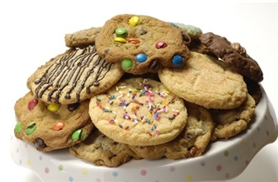

Joy's HomeMade Cookies
I first started baking cookies for family and friends.
I simply baked for the joy of making others feel appreciated.
Everyone I baked for begin to tell me I should go in business.
I accepted the challenge and started HomeMade Joy's Gourmet Cookies.
I began with three signature cookies!
Signature Cookies
- Oatmeal Butterscotch
- Double Chocolate
- Chocolate Chip